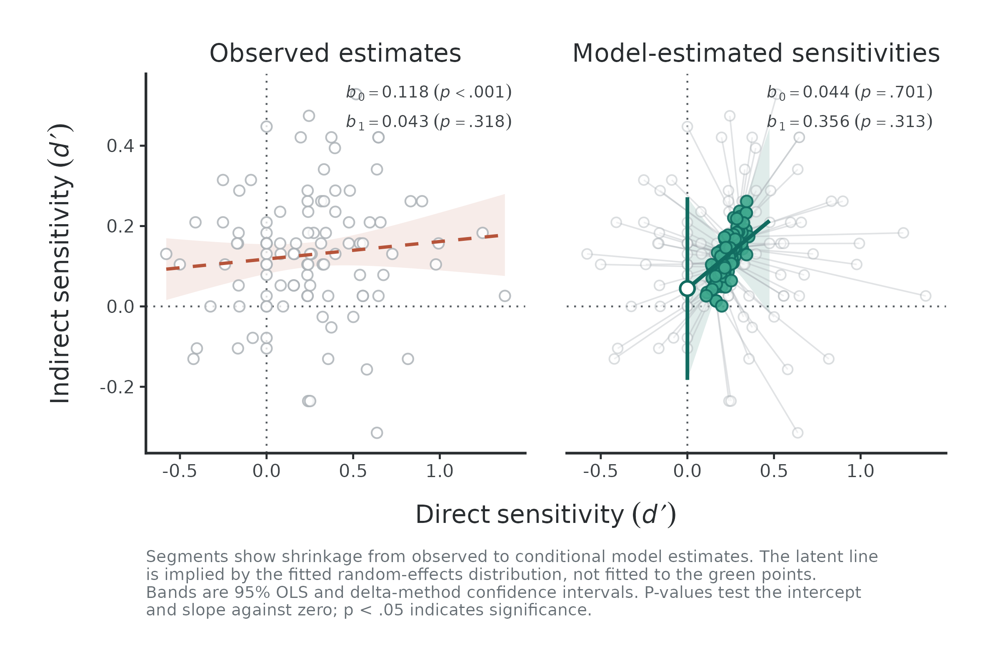
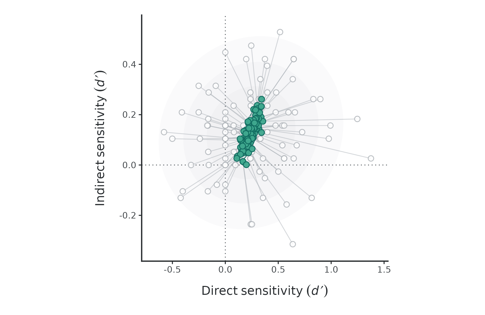
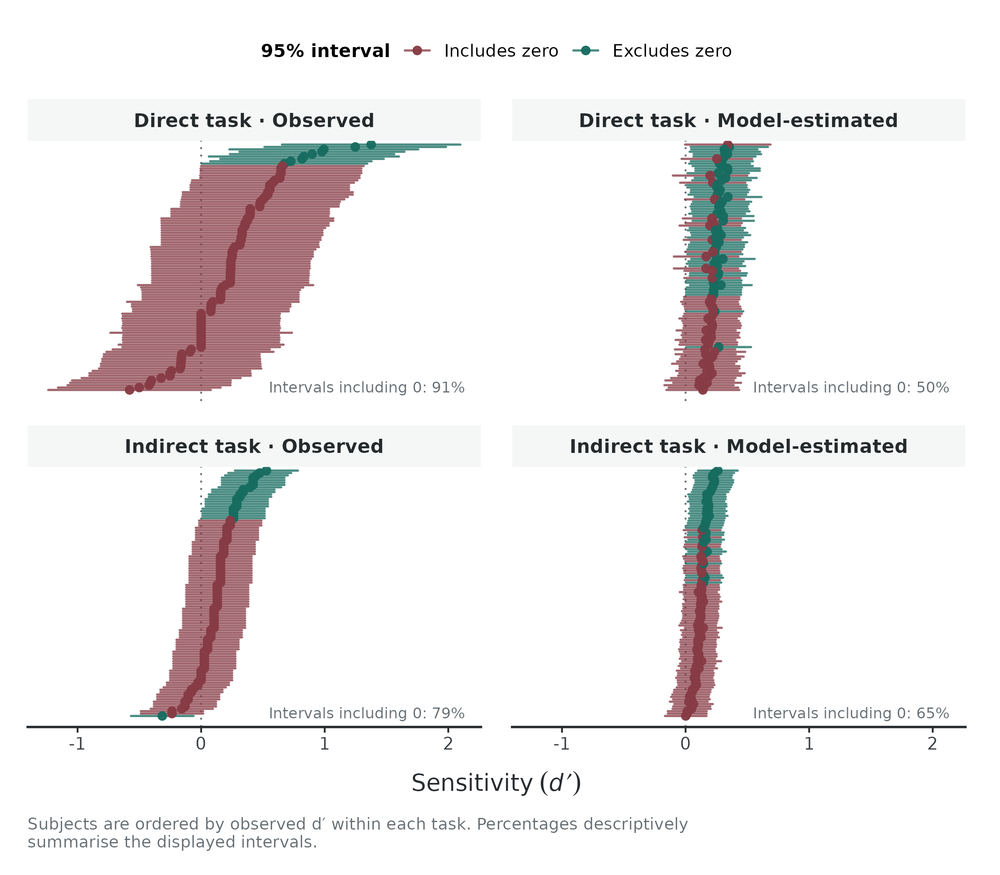
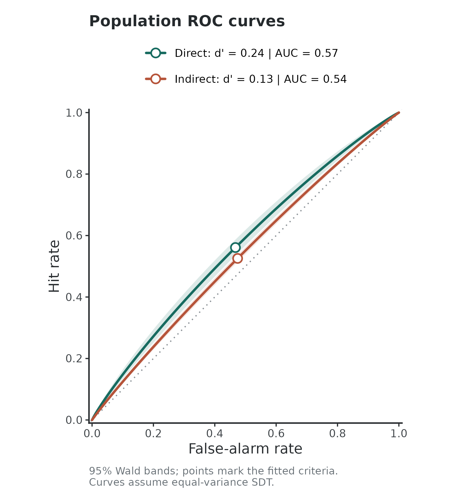
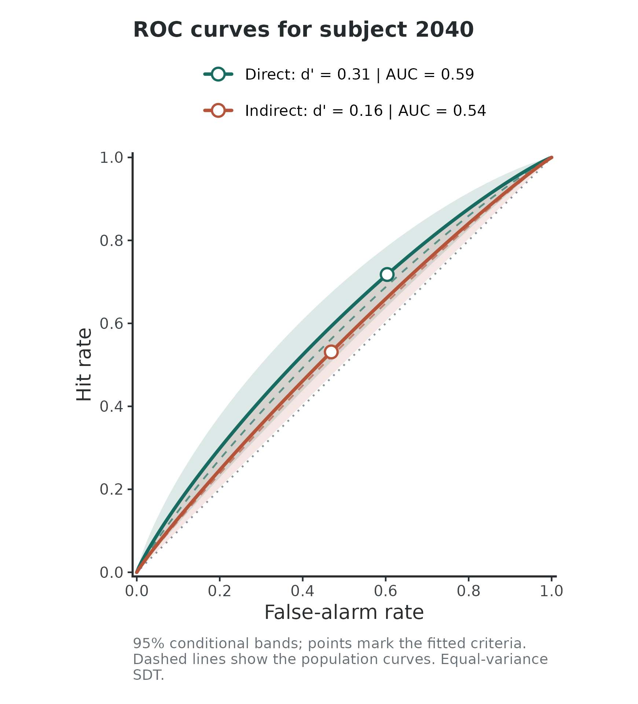

What is uSDT for?
In many cognitive experiments, we want to know whether a stimulus or
pattern influences behavior even when participants are not aware of it.
To test this, researchers often collect two paired measures from the
same participants: a direct task (asking directly
whether they noticed the masked stimulus or statistical regularity) and
an indirect task (measuring its behavioral effect, such
as priming or faster response times). The uSDT package
brings these paired data together into a hierarchical Signal Detection
Theory (SDT) framework, helping you test key hypotheses about
unconscious processing within a single unified model.
In this tutorial, you will walk through three straightforward steps:
-
Prepare your data: Use
usdt_data_tasks()orusdt_data_long()to get your paired measures ready for modeling. -
Fit the model: Run
hsdt()to fit the hierarchical SDT model. This model estimates overall task sensitivities, subject-specific sensitivity values, and tests three key hypotheses about unconscious processing. -
Inspect the results: Visualize key model estimates
with
plot(), quantify reliability at both the group and subject-specific levels withusdt_reliability(), or add parametric bootstrap inference withusdt_boot()if needed.
The data
To illustrate the workflow, uSDT includes trial-level
data from a contextual cuing experiment (Experiment 2 in Vadillo, Malejka, &
Shanks, 2025). The direct task (vadillo_awareness) is
an explicit recognition test where participants judged whether a search
display was repeated (old) or novel (new):
head(vadillo_awareness) subj file trial pattId judgm judged.old condition offset
1 2001 y109b_subj1051.mat 1 1001 1 0 old no offset
2 2001 y109b_subj1051.mat 2 1002 5 1 old no offset
3 2001 y109b_subj1051.mat 3 3005 4 1 new offset
4 2001 y109b_subj1051.mat 4 3006 5 1 new offset
5 2001 y109b_subj1051.mat 5 3001 2 0 new no offset
6 2001 y109b_subj1051.mat 6 1006 4 1 old offset
color set.size
1 color set size 8
2 b/w set size 8
3 color set size 8
4 b/w set size 8
5 color set size 8
6 b/w set size 8The indirect task (vadillo_cuing) measures the visual
search itself through response times. Contextual cuing occurs if
participants find targets faster in repeated (old) displays
than in new ones:
head(vadillo_cuing) experiment subj file trial block epoch pattId acc rt
1 Experiment 2 2001 y109b_subj1051.mat 1 1 1 2001 1 1305.352
2 Experiment 2 2001 y109b_subj1051.mat 2 1 1 1008 1 4027.887
3 Experiment 2 2001 y109b_subj1051.mat 3 1 1 1007 1 2484.210
4 Experiment 2 2001 y109b_subj1051.mat 4 1 1 2006 1 1771.315
5 Experiment 2 2001 y109b_subj1051.mat 5 1 1 1001 1 926.236
6 Experiment 2 2001 y109b_subj1051.mat 6 1 1 1006 1 1194.542
condition offset color set.size
1 new no offset color set size 8
2 old offset b/w set size 16
3 old offset color set size 16
4 new offset b/w set size 8
5 old no offset color set size 8
6 old offset b/w set size 8Both datasets share the subject identifier column (subj)
and condition labels (old / new). In your own
data, the column names and condition labels do not need to match between
tasks, but participants must share the same subject IDs across
both datasets.
Preparing the data
usdt_data_tasks()
combines the two tasks into a single paired dataset. You specify the
subject, condition, and response columns, and map their levels to signal
and noise roles.
Whenever an argument is shared across both tasks, you can pass
a single value (like
subject_col = "subj"). When tasks differ, provide a
list per task using
list(direct = ..., indirect = ...):
data_usdt <- usdt_data_tasks(
# One data frame per task
direct = vadillo_awareness,
indirect = vadillo_cuing,
# Shared subject column
subject_col = "subj",
# Condition mapping (shared column name and labels here)
condition_col = "condition",
condition_levels = c(signal = "old", noise = "new"),
# Response columns differ: judgements vs continuous response times
response_col = list(direct = "judged.old", indirect = "rt"),
# How responses map to signal vs noise
response_levels = list(
direct = c(signal = 1, noise = 0),
indirect = c(signal = "faster", noise = "slower")
),
# Dichotomize continuous response times using a median split
dichotomize = list(direct = FALSE, indirect = TRUE),
# Contrast coding scheme across conditions (deviation by-default)
coding = "deviation"
)Condition coding: deviation vs treatment
The coding argument only affects what the response
criterion (also called “bias parameter”) represents in the model. Task
sensitivity
()
remains identical under both schemes:
-
"deviation"(default): Codes signal as and noise as . The intercept reflects the overall response bias centered between both stimulus distributions. -
"treatment": Codes noise as and signal as . The intercept reflects the criterion relative only to the baseline (noise) condition.
By default, uSDT uses deviation coding.
How the median split works
Setting
dichotomize = list(direct = FALSE, indirect = TRUE)
converts continuous RTs into binary responses via a median split
computed within each subject across all trials, following the approach
proposed by Meyen et
al. (2022). In this case:
- RTs below the subject’s median count as
"faster"(signal responses). - A
"hit"is an old display searched faster than the median, while a"false alarm"is a new display searched faster than the median.
By design, splitting exactly at the median balances fast and slow
responses across trials. Under deviation coding, this
balance centers the indirect decision criterion at zero
().
Because of this, hsdt() fixes the indirect criterion to
zero by default whenever the mean absolute subject criterion is below
0.02 (you can override this with
fix_criteria = "none").
Inspecting the prepared data
Printing the object gives a quick sanity check before fitting the model:
data_usdt── Data summary ────────────────────────────────────────────────────────────────
Input: 2 data frames (usdt_data_tasks)
Subjects: 104 (104 in both tasks, 0 in one only)
Trials: 46,592 -> 416 aggregated rows (4 per subject)
Coding: deviation (condition coded -0.5 / +0.5; intercept estimates -c)
Parameters: 7 (3 fixed effects, 4 (co)variance components)
── Variable mapping ────────────────────────────────────────────────────────────
Variable Task Column Signal Noise
subject Direct subj - -
Indirect subj - -
condition Direct condition old new
Indirect condition old new
response Direct judged.old 1 0
Indirect rt faster slower [Meyen split]
── Descriptives: median [min, max] across subjects ─────────────────────────────
Task Trials/cell HR FAR d' (method-of-moments)
Direct 32 .56 [ .28, .88] .47 [ .12, .78] 0.24 [-0.58, 1.38]
Indirect 192 .53 [ .44, .60] .47 [ .40, .56] 0.13 [-0.31, 0.53]
No cells at floor or ceiling.Take a moment to inspect the three sections of this summary:
-
Data summary: Confirms subject overlap (e.g., all
104 participants completed both tasks) and shows how raw trials were
aggregated into 4 condition-by-response cells per subject. It also
reminds you of the chosen
coding. -
Variable mapping: Verifies that your column names
and signal/noise assignments match your experimental expectations
(including the
[Meyen split]flag on the indirect RTs). - Descriptives: Reports the median and range of hit rates (HR), false alarm rates (FAR), and descriptive across subjects. It also warns if any participants hit floor or ceiling rates, which helps catch data issues early.
Fitting the model
Once the data are prepared, hsdt() fits the
hierarchical SDT model via a binomial probit generalized linear mixed
model (implemented with lme4). The model estimates the
average sensitivity
()
for each task along with between-subjects individual differences. You
can inspect the parameter estimates, random-effects, and hypothesis
tests using summary():
── Model summary ───────────────────────────────────────────────────────────────
Subjects: 104
Observations: 416 aggregated rows (46,592 trials)
Family: binomial (probit)
Coding: deviation
Criteria: Direct estimated, Indirect fixed to 0 (Meyen split, mean |c| = 0.0000)
Estimation: lme4::glmer (bobyqa)
Convergence: TRUE
── Fixed effects ───────────────────────────────────────────────────────────────
Parameter Task Estimate SE 95% CI z p-value
criterion Direct -0.0357 0.0289 [ -0.092, 0.021] -1.24 .215
d' Direct 0.2354 0.0335 [ 0.170, 0.301] 7.03 <.001
d' Indirect 0.1283 0.0153 [ 0.098, 0.158] 8.41 <.001
── Random effects ──────────────────────────────────────────────────────────────
Parameter Task Estimate SE 95% CI
sd(criterion) Direct 0.2473 0.0246 [ 0.203, 0.301]
sd(d') Direct 0.1219 0.0666 [ 0.042, 0.356]
sd(d') Indirect 0.0883 0.0190 [ 0.058, 0.135]
cor(d') both 0.4912 0.5190 [ -0.666, 0.954]
── Hypotheses ──────────────────────────────────────────────────────────────────
H1: Group-level sensitivity difference (Δd' = Direct d' - Indirect d')
Parameter Estimate SE 95% CI z p-value
Δd' (D - I) 0.1071 0.0354 [ 0.038, 0.176] 3.03 .002
H2: Correlation between sensitivities across tasks
Parameter Estimate SE 95% CI z p-value
rho 0.4912 0.5190 [ -0.666, 0.954] 1.01 .313
H3: Latent regression of Indirect d' on Direct d'
Parameter Estimate SE 95% CI z p-value
Intercept 0.0445 0.1160 [ -0.183, 0.272] 0.38 .701
Slope 0.3561 0.4870 [ -0.599, 1.311] 1.01 .313
── Notes ───────────────────────────────────────────────────────────────────────
Use usdt_boot(fit, nsim = 1000, ncores = 4) for bootstrap CIs.Understanding fixed and random effects
The summary breaks the model into two primary structural components before presenting hypothesis tests:
-
Fixed effects (group-level means): The fixed
estimates describe average task performance across all participants.
Here, mean sensitivity is reliably above zero in both the direct task
(
d' = 0.24, ) and the indirect task (d' = 0.13, ), indicating above-chance recognition and a significant contextual cuing effect overall. The direct criterion (-0.04, ) shows no substantial group-level response bias. As determined during data preparation, the indirect criterion is fixed to zero and therefore omitted from estimation. -
Random effects (individual differences): These
parameters capture between-subject variability around the group means.
The standard deviations (
sd(d')) reflect individual variability in sensitivity for both tasks. The correlation parameter (cor(d') = 0.49) estimates the latent association between direct and indirect sensitivity across participants, though its wide confidence interval indicates considerable uncertainty around this estimate.
Testing unconscious processing: The three hypotheses
The bottom section of the model output tests three complementary
questions often raised in the unconscious processing literature. You can
inspect these results directly in the main summary or extract them as a
standalone table with fit_uSDT$tests.
H1: Group-level sensitivity difference ()
The first hypothesis asks whether the two tasks differ in their average sensitivity. In unconscious perception paradigms, finding that indirect sensitivity clearly exceeds direct sensitivity () is sometimes taken as an indirect-task advantage—suggesting that the indirect measure picks up signal that conscious report misses.
In our sample, the difference is positive and significantly different from zero (, 95% CI , ). Direct recognition was significantly stronger than indirect contextual cuing, so we find no evidence of an indirect-task advantage.
H2: Latent correlation between tasks ()
The second test examines individual differences: do participants with stronger conscious recognition also display larger cuing effects? In some theoretical accounts, an indirect effect that operates independently of conscious awareness would predict a weak or near-zero correlation between both measures.
Here, the estimated latent correlation is positive (), but it comes with considerable estimation uncertainty (95% CI , ). Because the confidence interval is so wide, failing to reach significance here simply reflects high measurement noise around the correlation, rather than positive evidence that the two processes are dissociated. We will see this more clearly later when evaluating task-specific reliability.
H3: Latent regression (Indirect on Direct )
The third test evaluates what happens at the boundary of awareness via a latent regression. Specifically, the intercept () estimates what level of indirect sensitivity we would expect when direct sensitivity is exactly zero (). If this intercept is significantly different from zero and positive, it suggests that participants would still show a behavioral cuing effect even without any conscious awareness of the stimuli.
In this experiment, the regression slope is positive (, ), and the estimated intercept is slightly above zero (). However, its confidence interval easily covers zero (, ), showing no evidence of unconscious processing in the absence of awareness.
Reliability of individual differences
Evaluating unconscious processing through individual differences is delicate because measurement error does not just add noise, it systematically biases theoretical conclusions when ignored.
It is widely know that low reliability attenuates correlations toward zero (Spearman, 1904), making direct and indirect tasks appear falsely independent. It also flattens the regression slope and artificially inflates the intercept, creating the illusion that indirect processing persists without awareness. In practice, measurement error actively conspires to produce evidence of unconscious processing. Fortunately, hierarchical SDT models test these hypotheses at the latent level, naturally accounting for measurement error regardless of the specific reliability values.
Even though hsdt() protects the tests against this bias,
estimating reliability remains useful for understanding how well
individual differences were measured. usdt_reliability()
estimates the reliability of each experimental effect treated as an
individual-differences dimension:
usdt_reliability(fit_uSDT)── Reliability summary ─────────────────────────────────────────────────────────
Task Subjects Group-level estimate By-subject estimate median [min, max]
Direct 104 .129 .130 [.119, .131]
Indirect 104 .323 .323 [.322, .323]In this sample, the group-level reliability is low for both the
direct task (.13) and the indirect task (.32).
Because individual differences in both measures carry substantial trial
noise, the model cannot estimate between-task associations with
precision. This modest reliability directly explains the wide confidence
intervals we observed earlier for the latent correlation
()
and the regression intercept.
In addition to the overall group summary, you can inspect
subject-specific reliability estimates. The $subjects
element returns a data frame with individual values:
print(head(usdt_reliability(fit_uSDT)$subjects), digits = 3) task subj dprime variance reliability
1 Direct 2001 0.271 0.0990 0.130
2 Direct 2002 0.249 0.1043 0.125
3 Direct 2003 0.217 0.1002 0.129
4 Direct 2004 0.318 0.0991 0.130
5 Direct 2005 0.144 0.1004 0.129
6 Direct 2006 0.173 0.0993 0.130Visualizing the model
The latent regression
To make the consequences of measurement error intuitive,
plot() compares a standard regression on observed
sensitivities against the model’s latent regression side by side:
plot(fit_uSDT)
The contrast between the two panels illustrates the core problem:
- Observed estimates (left panel): Regressing raw indirect on raw direct ignores measurement error. Unreliability severely flattens the slope () and artificially pushes the intercept upward (). An applied researcher relying on standard regression would mistakenly conclude that there is compelling evidence for unconscious processing at .
- Model-estimated sensitivities (right panel): The hierarchical model corrects for trial-level noise. Grey segments show shrinkage from raw to model-implied values (green points). Accounting for unreliability steepens the latent slope () and pulls the intercept down to near zero (, marked at the vertical dotted line).
Shrinkage
To inspect how the model pulls individual estimates toward the group
distribution, set type = "shrinkage", where grey circles
show raw
,
while green points show the model-implied
estimates.
plot(fit_uSDT, type = "shrinkage")
Subject intervals
To look at individual sensitivities relative to zero across tasks, use a caterpillar plot:
plot(fit_uSDT, type = "caterpillar")
The left panels show observed values and their 95% confidence intervals, whereas the right panels show model-implied values and their 95% confidence intervals. Green intervals exclude zero, whereas brown intervals cross the dotted vertical line.
In the raw data, noisy trial estimates leave most individual intervals crossing zero (91% in direct, 79% in indirect). Pooling information in the hierarchical model shrinks extreme point estimates toward the group mean and tightens their uncertainty, reducing the share of intervals crossing zero.
ROC curves
To view task performance within standard Signal Detection Theory
space, set type = "roc":
plot(fit_uSDT, type = "roc")
The plot draws model-implied, equal-variance ROC curves for each task
based on the group-level parameter estimates. The circular markers
indicate the operating point determined by the fitted response criterion
(),
accompanied by their 95% Wald bands and Area Under the Curve (AUC)
values. You can also inspect individual participants by supplying a
subject_id:
plot(fit_uSDT, type = "roc", subject_id = 2040)
The solid curves and points reflect that participant’s partially pooled estimates, while the dashed lines keep the population curves in the background for visual reference.
Where to go from here
Parametric bootstrap inference
Analytical standard errors and Wald intervals can become unreliable
when variance components approach zero or correlations sit near
boundaries
().
For more robust inference, usdt_boot()
implements a parametric bootstrap that simulates new data from the
fitted model and refits each replicate.
fit_boot <- usdt_boot(fit_uSDT, nsim = 1000, ncores = 4, seed = 2026)
summary(fit_boot)
fit_boot$testsA few practical considerations when bootstrapping:
- Convergence and filtering: The function automatically discards non-converged refits, tracking diagnostic flags in the output. A minimum of 500 valid bootstrap replicates is recommended for trustworthy confidence intervals.
- Dichotomized designs: The simulation generates binary trial responses at the original cell sizes without repeating upstream steps like response-time median splits.
- Information limits: While bootstrapping resolves boundary issues in Wald approximations, it remains conditional on the model and cannot compensate for an inherently underpowered design.
Long-format datasets
If your direct and indirect data already reside in a single data
frame with a task column, you can prepare them directly using usdt_data_long() by
specifying task_col and task_levels.
References
Meyen, S., Zerweck, I. A., Amado, C., von Luxburg, U., & Franz, V. H. (2022). Advancing research on unconscious priming: When can scientists claim an indirect task advantage? Journal of Experimental Psychology: General, 151(1), 65-81. https://doi.org/10.1037/xge0001065
Spearman, C. (1904). The proof and measurement of association between two things. The American Journal of Psychology, 15(1), 72–101. https://doi.org/10.2307/1412159
Vadillo, M. A., Malejka, S., & Shanks, D. R. (2025). Mapping the reliability multiverse of contextual cuing. Journal of Experimental Psychology: Learning, Memory, and Cognition, 51(6), 910-927. https://doi.org/10.1037/xlm0001410